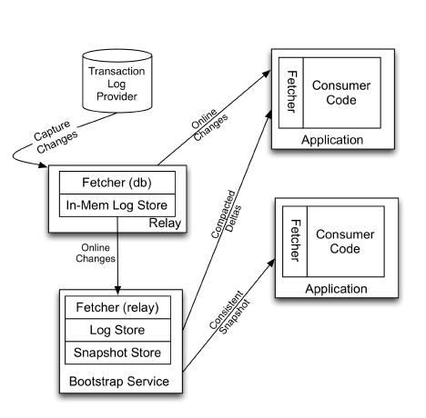
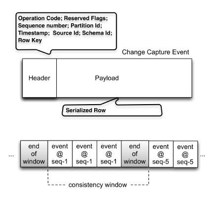

Databus: Linkedin’s Scalable Consistent Change Data Capture Platform
A source-agnostic distributed change data capture system of LinkedIn's data processing pipeline.
Background
- Data systems are categorized as primary and derived data stores. A requirement from derived data stores is to capture, flow and process primary data changes.
- There are two families of solutions, (1) application-driven dual writes that lets application writes multiple data systems in parallel and (2) database log mining that extracts changes from primary data store's transaction log. We choose (2) because it avoids complex coordination protocol for consistency and has single source-of-truth.
Architecture
Overview
- Logical Components: fetcher to extract changes, log store to cache change stream, snapshot store to store a moving snapshot of change stream and subscription client to pull changes and surface them to applications.
- relay process = fetcher + in-memory log store
- bootstrap service = persistent log store + snapshot store
- Databus is externally-clocked. Each change set is annotated with a monotonically-increasing system change number (SCN) assigned by data source.
- Databus favors pull over push model because we need to keep SCN timelines for a large number consumers and it simplifies error handling.

Relay
- The changes extracted by fetcher are serialized into binary format independent of sources (Avro). They are grouped within transaction boundaries, annotated with SCN and buffered in the transient log.
- The relay does not maintain consumer-related states. Subscription client maintains progress checkpoint and and pass on each pull request.
- To deploy a cluster of processes, we can let either (1) all relays independently connecting the data source or (2) one relay as leader and the rest followers pull changes from the leader.
- The change data is stored in a long-lived in-memory circular buffer using the on-wire serialization format. This enables high-throughput bulk-writes when serving pull requests and minimizes GC pressure (performance variance). The trade-off here is on-wire format needs more CPU resources for filtering.
- A skip list index is implemented on top of the buffer to efficiently serve pull requests to scan changes from a particular SCN.
- Consistency windows are marked explicitly so consumers can differentiate the cases of no updates and of no updates matching the filter. The end-of-window markers can also contain additional metadata like checksums.

Bootstrap Service
- For consumers fallen behind a lot, it is more efficient to catch up with a snapshot of compacted changes, i.e. only the latest state of affected rows.
- Bootstrap service database has a persistent log store and a snapshot store because:
- New changes are applied to the snapshot store while the consumer applications are reading (it is not practical to lock the snapshot store), so bootstrap service will replay changes after the snapshot read started for consistency.
- It ensures bootstrap service has enough write throughput to keep up the data source since appending to the log store is much cheaper than building the snapshot store.